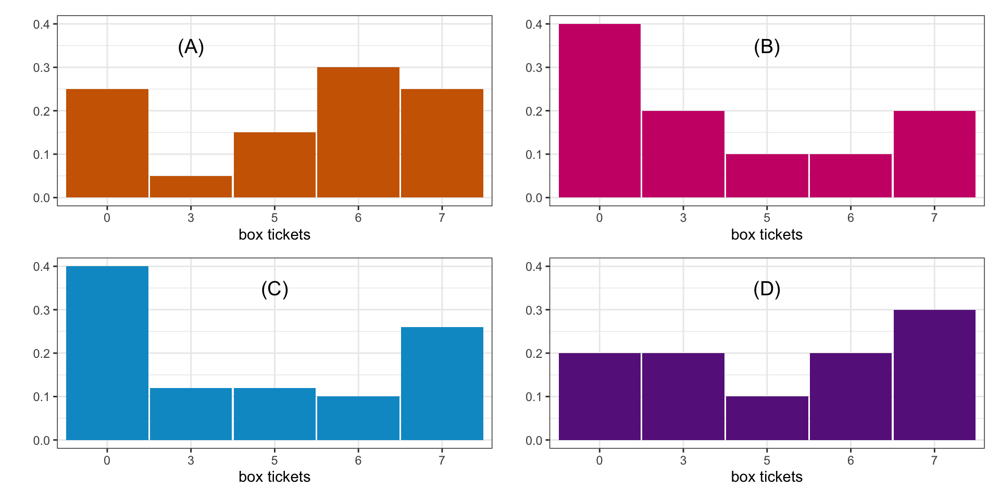

STAT 20: Introduction to Probability and Statistics
Adapted by Gaston Sanchez
Agenda
Announcements
Probability refresher (last week)
Break
Concept questions: Probability Distributions
PS 8: Probability Distributions
Announcements
No lab today
Problem Set 8 (paper max. 3) due next Tuesday at 9am
RQ: Random Variables due Wednesday 11:59pm
Probability Refresher
25:00
Concept Questions
02:00
Consider the box of tickets shown below.
The plots below show:
The probability histogram for the value of a ticket drawn at random from the box
An empirical histogram for which the data were generated by drawing 10 tickets from the box with replacement
An empirical histogram for which the data were generated by drawing 100 tickets from the box with replacement
An empirical histogram generated by 20 draws from a different box.

Identify which is which by matching the letters to the numbers.
Binomial, hypergeometric, or neither?
01:00
Does the quantity described below have a probability distribution that is binomial (if so, what are \(n\) and \(p\)?), hypergeometric (if so , what are \(N\), \(G\), and \(n\)?), or neither (why)?
Roll a fair ten-sided die 20 times. We count the number of times we roll a multiple of 3.
Binomial, hypergeometric, or neither?
01:00
Does the quantity described below have a probability distribution that is binomial (if so, what are \(n\) and \(p\)?), hypergeometric (if so , what are \(N\), \(G\), and \(n\)?), or neither (why)?
YouGov surveyed 1,500 adult US citizens last December and counted the number of respondents who had read at least one book in 2023. The population of the US is about 335 million.
Binomial, hypergeometric, or neither?
01:00
Are we describing a probability distribution below that is binomial? Or is it hypergeometric? Or do neither apply?
A six-sided die is tossed twice, and we check if the sum of the spots is 8 or not.
Binomial, hypergeometric, or neither?
01:00
Are we describing a probability distribution below that is binomial? Or is it hypergeometric? Or do neither apply?
A bag that has 6 pieces of fruit: 2 mangoes, 3 apples, and 1 orange. I reach into the bag and draw out one fruit at a time, selecting each fruit at random (so they are equally likely on each draw). I count the number of draws until and including the first time I draw a apple.